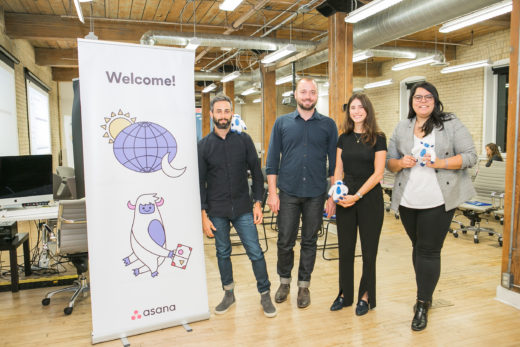
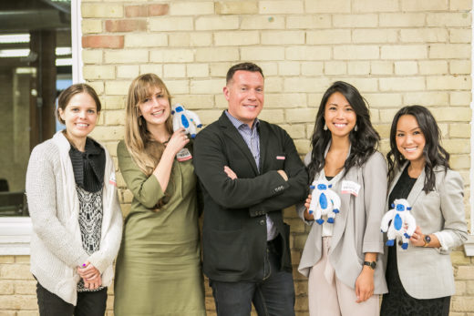

By Rebecca Hinds
Oct 12, 2018
The “Asana Together World Tour” continued by kicking off October with our Toronto stop. Over 50 Asana Community members gathered at
The evening kicked off with a keynote presentation from Cristina Mendes, an Integrated Marketing Manager at Kobo, a global leader in eBooks and audiobooks. Cristina was joined by three additional Asana customers: Bryn Jones, co-founder and CEO of GrowSumo, Emma Sinai, an Enterprise Customer Success Manager also from GrowSumo, and Dave Sorbara, a partner at Grayson Matthews Design for a vibrant panel and Q&A discussion.
The bottom line: Teamwork is challenging. Fortunately, our panelists left attendees with six valuable tips for empowering their teams. Here they are for you to share with and inspire your team.
Acronyms, buzzwords, and jargon have bombarded the workplace. Even seemingly simple terms like “innovation,” “creative brief,” and “priority” have very different meanings depending on who you’re talking to.
Cristina of Kobo realized the importance of establishing a shared language and consistent terminology while managing a globally-distributed team of over 50 people. She urged us to constantly be on the watch for miscommunication. For example, if you’re not sure what “high priority” means, ask. Better yet, use Asana to create a glossary of different terms that are integral to your team’s processes and workflows.
Each member of your team has a responsibility to share team processes and ensure that they are clear on the meanings of different language before delving into project work. A single shared language will help unify your team, avoid confusion, accelerate decision-making, and, ultimately, boost your productivity.
Bryn of BuzzSumo warned of the dangers of tool overload. He described it in the context of the Paradox of Choice, when we become paralyzed if given too many choices. “If you are given 100 different mustards to choose from at the supermarket, you are less likely to make a purchase compared to when you’re presented with only three different varieties,” he explained.
The same goes for tools and apps: when we’re using too many, we spend too much time looking for information, context switching, and, ultimately, lose focus. 75% of workers have between five and nine work-related apps open at any given time. Yet 74% reported they wouldn’t be able to find a document from a year ago in under five minutes.
So before your team downloads yet another app, make sure you first identify the problem, then determine the best way to solve it. Teams should also prioritize tools that integrate well with each other, so they can switch seamlessly while keeping work connected.
While it’s impossible for all of our communication to happen in person, the importance of face-to-face communication can’t be overlooked. Dave of Grayson Matthews Audio Design works with a large team of composers, producers, and sound designers. He spoke of the importance of non-verbal communication such as body language, gestures, and tone of voice in helping his team develop shared meaning. “As a composer, you really need to see someone say, ‘I think that should sound more mellow,’” he reflected.
This helps explain why talking through a request or asking for help face-to-face is 34 times more successful than via email. In-person communication helps us establish trust and respect. So the next time you’re kicking off a project, have an urgent request, or are looking for volunteers, try talking to your teammates in person first, then follow up with all the details in Asana so they can follow through
Without motivation, we’re likely to remain in a perpetual slump. Bryn and Emma at GrowSumo urged us of the importance of motivating people along two dimensions. First, leaders must align their team with broader organizational goals and articulate how individual objectives fit into these goals. Second, leaders must ensure broader goals support individuals’ career goals. Half of workers say their company doesn’t provide them with sufficient career development activities to help them advance, and in turn, fewer than half are motivated to do their best work.
Managers and team leads should make sure their employees understand how they can grow within their current roles. It’s important to set up regular one-on-ones so that employees and managers have precious time to connect on goals and progress, without the stress of a performance review. You can get started with our meeting template!
We only have 40 hours in the average workweek. At the same time, we’re besieged by seemingly endless slews of emails, pings, and impromptu meetings. It’s a lot! Each of the panelists emphasized the value of prioritization.
Bryn, a self-proclaimed “mindless entrepreneur,” told us that he starts his days strategically selecting three priorities. The routine forces him to focus only on mission-critical tasks. It also forces him to acknowledge that he’s not going to be able to complete all the tasks on his plate.
Emma spoke about the value of GrowSumo’s “Move the rock Thursday meetings.” During these weekly meetings, all attendees must choose a maximum of ten priorities or “rocks” to focus on throughout the upcoming week. Any task or project not included in the top ten list is deprioritized. The meeting is a forcing function for prioritizing.
Dave highlighted the importance of delegation and identifying which parts of your workload can be effectively executed by others. Given that 41% of knowledge workers’ time is spent on activities that could be handled competently by others, his advice is valuable for all of us.
Distractions relentlessly gnaw away at our productivity levels—the average worker switches tasks every three minutes. And it takes an average of more than 23 minutes to refocus after a single interruption! Ouch.
Cristina spoke of the importance of establishing boundaries to shield against distractions. Her secret to success? When it comes time to focus, she finds an isolated space and disables all notifications on her phone. She’s unapologetic about it. She knows that ruthlessly prioritization is critical to her and her team’s success.
Teamwork is the key to your company’s success. Yet it is rife with friction. The tried and true advice shared by our panelists help us all maximize our potential for success and helps us ensure that our team’s whole is greater than the sum of its individual parts. As Helen Keller reminds us, “Alone we can do so little; together we can do so much.”
Special thanks to Jenny Thai, Logan LeVan, Joshua Zerkel, Kimberlea Buczeke, and Nikki Henderson
Comments: